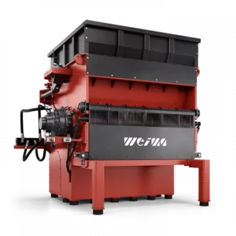
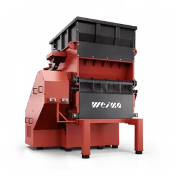
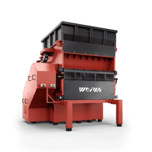

- Choose Language

The all-rounder for plastics of all kinds in large volumes. With the W5.22 you can shred everything: from large-volume objects to tear-resistant fibers and films. With innovative inspection flap for easy maintenance access and swing-arm ram for optimized shredding.

Master the most difficult materials effortlessly with the universal V rotor
Measuring 500 mm in diameter and up to 2,200 mm in length, the V rotor of the W5 series was designed for ambitious throughput targets with high flexibility. Thanks to its innovative design, even large start-up lumps, hollow bins and very voluminous parts pose no problem.
Easy machine operation thanks to PLC control with large touch panel
ReduceAll's latest shredder generation also uses only the latest technology in a compact space for the control cabinet. The shredder, as well as the peripherals – including conveyor belts, separation technology and secondary shredders – can be controlled centrally with the Siemens PLC control system. Material flows can thus be processed in an energy-efficient manner. ReduceAll optionally offers a handy remote control for controlling the machine for added flexibility, especially during maintenance.
Controlled feed and precise cut with proven F rotor
ReduceAll is known for its precise cutting geometries. The F rotor is a prime example. Its milling and special knife arrangement are ideal for shredding flexible materials such as fibers and films. For extreme applications and contaminated material streams, we recommend an additional Vautid wear guard to protect the rotor.
Optimum cutting geometry thanks to adjustable counter blades
To ensure that the cutting gap is always perfect, even with wear, the counter knives of the W5 series can be quickly adjusted and turned from the outside. This leads to a constantly high throughput rate and increases the knife service life.
Convenient maintenance and optimum rotor access thanks to generous inspection flap
The most striking feature of the W5 machines is certainly the built-in inspection flap. As soon as the swing ram is secured in its upper starting position, the wide access from the rear can be opened hydraulically. You are now in the middle of the cutting chamber and have plenty of space to remove foreign matter from the rotor or to carry out maintenance work at a comfortable working height.
Optimized material feed through innovative swing ram
The W series from ReduceAll is characterized by its distinctive swing ram and correspondingly high ram speed, which is integrated in the cutting chamber to save space and requires extremely low maintenance. Material already slides to the rotor by gravity and is then continuously or cyclically pressed against it by the hydraulically movable swing ram. For even more aggressive feeding, the ram can optionally be equipped with an additional pressing feature.
Lift-up screen basket
for maintenance-friendly access
The choice of the appropriate screen is closely related to the desired shredding result. For maximum flexibility, the segments can therefore be exchanged individually. Different perforated screen diameters and screen variants such as the innovative kidney screen are possible. The entire screen basket can be opened hydraulically at the push of a button.
High-torque or hydraulic drive? You have the choice.
Depending on the application, we offer two drive concepts: The high-torque drive with a high-torque, multi-pole synchronous motor is produced by Baumüller in Germany and is distinguished by its insensitivity to foreign materials. Without a gearbox, the drive withstands shocks and vibrations and thus has a particularly long service life. The Hägglunds / Bosch Rexroth hydraulic actuator is very responsive – at a low connected load. Stopping, starting, and reversing is possible even under full load. Speed and torque are infinitely variable without a frequency converter.
Robust technology and machine frames – Made in Germany
To minimize vibration and wear, ReduceAll relies on a machine wall thickness of 40 mm as part of an optimized frame design. It also depends on the large rotor diameter of 500 mm. Matching cutting blades are available in edge lengths of 40, 60 and 80 mm. Vibration-absorbing machine feet also come standard.
Ready for fast material transport thanks to simple integration of conveyor technology
The feed opening of the W5 machines has been designed to be particularly generous. The low loading edge is ideal for direct filling via forklift or wheel loader. Discharging material is also easy. The wide conveyor belt cutout allows for large quantities of shredded material to be transported quickly and cleanly.
|  |  |  | |
S5.20 lift-up |
S5.15 lift-up |
S5.25 lift-up |
|
| Rotor Diameter (mm) | 500*1 | 500*1 | 500*1 |
| Rotor length (mm) | 2,200 | 1,400 | 1,800 |
| Rotor Speed (rpm) | 50 - 200*2 | 50 - 200*2 | 50 - 200*2 |
| Power (kW) | 90 - 280*3 | 90 - 280*3 | 90 - 280*3 |
| Rotor Knives | 218*4 | 148*4 | 188*4 |
| Available knife sizes (mm) | 40|60|80 | 40|60|80 | 40|60|80 |
| Fraction size (mm) | 20 - 100 | 20 - 100 | 20 - 100 |
| Infeed opening (mm) | 2000 x 20000 | 1400 x 2,000 | 1800 x 2,000 |
| Length (mm) | 2,470 | 2,470 | 2,470 |
| Width (mm) | 3,150 | 2,450 | 2,800 |
| Height (mm) | 3,000 | 3,000 | 3,000 |
| Weight (approx. kg) | 11,500 | 9,500 | 10,500 |
| Wall thickness (mm) | 40 | 40 | 40 |
|
*1 dependent on cutting circle *2 dependent on specific drive configuration *3 dependent on drive technology *4 dependent on machine configuration *5 in standard configuration |
*1 dependent on cutting circle *2 dependent on specific drive configuration *3 dependent on drive technology *4 dependent on machine configuration *5 in standard configuration |
*1 dependent on cutting circle *2 dependent on specific drive configuration *3 dependent on drive technology *4 dependent on machine configuration *5 in standard configuration |